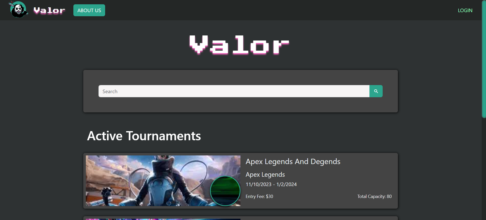
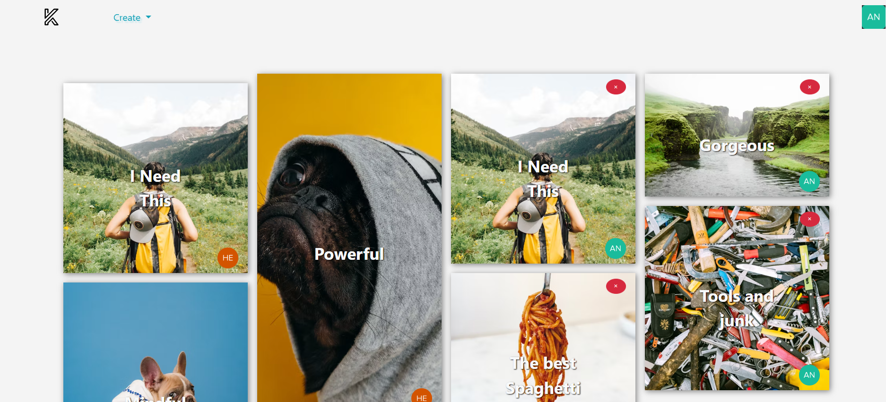
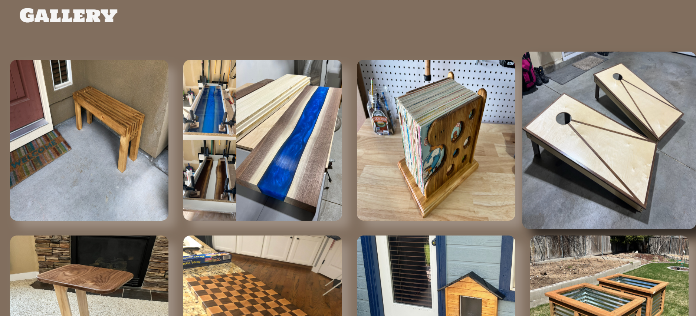
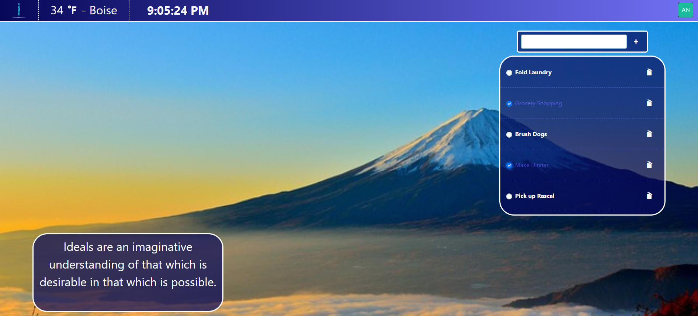

Software Developer
Blake Lawatch
When approaching the idea of a career change, I asked myself what I enjoyed doing, and how could I turn that into a profession? Coding became the obvious answer very quickly. I’ve always enjoyed working with computers, and I love the idea of creating something from scratch. After completing my schooling, I have the necessary tools to make that a career. Now it’s all about growth and continuous learning to create the next great thing.
Languages


Applications
-Valor-
A video game tournament application I worked on with 4 other developers in a 2 week time frame. This was built using Vue front end and Node back end. Creating, managing, and using multiple API's to bring all things tournaments to one central location.
-Keepr-
A Pinterest style application. Our final at Codeworks where we had to create one to one, one to many, and many to many relationships. Security was the name of the game in this one, preventing malicious users was the main goal as we built the back end in C+.
-WoodShop-
A real world website for a local wood worker. We wanted to show off to the world his talents and his expertise coming from an engineering background. Using computer programs to design perfect furniture, and then using a craftsman's touch to give love to every piece.
-Inspire-
This project was more a test of CSS while also talking to multiple API's. The goal was a new age screen saver where a quote was displayed, along with an accurate local temperature and time, and the background image changed on every refresh. This was built using a Node back end and MVC front end
My Story
PERSONAL - I've always
called Boise ID my home. I'm a lover of all things athletic. I love to get up and move, play sports,
and
use my body and mind to have a little fun. I grew up very active. If I didn't have a baseball bat in
my
hands, I had a skateboard under my feet.
As an adult, I spend time with my wife and 3 children. We do everything from attending Steelheads
games
to adventurous eating whether at a restaurant or at home.